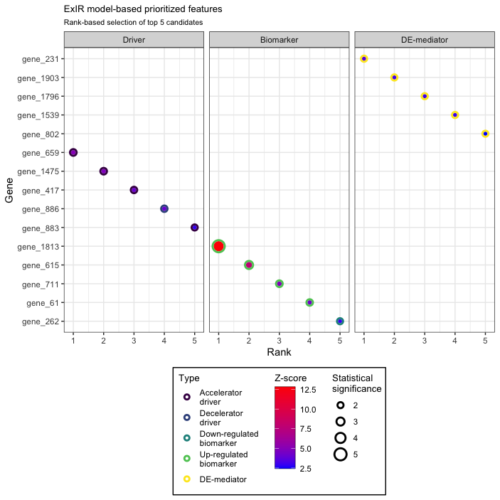

Introduction to influential
Identification and classification of the most influential nodes
Abbas (Adrian) Salavaty 01-Feb-2023
Source:vignettes/Vignettes.Rmd
Vignettes.RmdOverview

influential is an R package mainly for the
identification of the most influential nodes in a network as well as the
classification and ranking of top candidate features. The
influential package contains several functions that could
be categorized into five groups according to their purpose:
- Network reconstruction
- Calculation of centrality measures
- Assessment of the association of centrality measures
- Identification of the most
influentialnetwork nodes - Experimental data-based classification and ranking of features
The sections below introduce these five categories. However, if you
wish not going through all of the functions and their applications, you
may skip to any of the novel methods proposed by the
influential, including:
Fase correlation analysis
Correlation (association/similarity/dissimilarity) analysis is the
first required step before network reconstructions. Although R base
cor function makes it possible to perform correlation
analysis of a table, this function is notably slow in the correlation
analysis of large datasets. Also, calculation of probability values is
not possible for all correlations between all pairs of features
simultaneously. The fcor function calculates
Pearson/Spearman correlations between all pairs of features in a
matrix/dataframe much faster than the base R cor function. It is also
possible to simultaneously calculate mutual rank (MR) of correlations as
well as their p-values and adjusted p-values. Additionally, this
function can automatically combine and flatten the result matrices.
Selecting correlated features using an MR-based threshold rather than
based on their correlation coefficients or an arbitrary p-value is more
efficient and accurate in inferring functional associations in systems,
for example in gene regulatory networks.
Here is an example of performing correlation analysis using the
fcor function.
# Prepare a sample dataset
set.seed(60)
my_data <- matrix(data = runif(n = 10000, min = 2, max = 300),
nrow = 50, ncol = 200,
dimnames = list(c(paste("sample", c(1:50), sep = "_")),
c(paste("gene", c(1:200), sep = "_")))
)Have a look at top 5 samples and gene (rows and columns) of the
my_data:
| gene_1 | gene_2 | gene_3 | gene_4 | gene_5 | |
|---|---|---|---|---|---|
| sample_1 | 229.80194 | 202.09477 | 286.98031 | 212.86299 | 255.15716 |
| sample_2 | 107.12704 | 262.56776 | 92.47135 | 263.67454 | 188.00376 |
| sample_3 | 208.04590 | 123.99512 | 284.35705 | 173.80360 | 270.60758 |
| sample_4 | 209.36913 | 141.90713 | 154.59261 | 130.17074 | 219.54511 |
| sample_5 | 86.21945 | 14.10478 | 258.05186 | 40.89961 | 18.83074 |
# Calculate correlations between all pairs of genes
correlation_tbl <- fcor(data = my_data,
method = "spearman",
mutualRank = TRUE,
pvalue = "TRUE", adjust = "BH",
flat = TRUE)Now have a look at the top 10 rows of the
correlation_tbl:
| row | column | cor | mr | p | p.adj |
|---|---|---|---|---|---|
| gene_1 | gene_2 | 0.3373349 | 3.872983 | 0.0165899 | 0.8096184 |
| gene_1 | gene_3 | 0.0721729 | 122.270193 | 0.6184265 | 0.9981266 |
| gene_2 | gene_3 | 0.0002401 | 200.000000 | 0.9986797 | 0.9995793 |
| gene_1 | gene_4 | -0.0636255 | 132.864593 | 0.6606863 | 0.9981266 |
| gene_2 | gene_4 | 0.0124370 | 182.931681 | 0.9316877 | 0.9981266 |
| gene_3 | gene_4 | -0.0945498 | 108.958708 | 0.5136765 | 0.9981266 |
| gene_1 | gene_5 | -0.0616086 | 136.167177 | 0.6708188 | 0.9981266 |
| gene_2 | gene_5 | -0.1063625 | 90.862533 | 0.4622400 | 0.9981266 |
| gene_3 | gene_5 | 0.2174790 | 25.922963 | 0.1292321 | 0.9700054 |
| gene_4 | gene_5 | 0.0341417 | 171.499271 | 0.8139135 | 0.9981266 |
Network reconstruction
Three functions have been obtained from the igraph1 R package
for the reconstruction of networks.
From a data frame
In the data frame the first and second columns should be composed of
source and target nodes.
A sample appropriate data frame is brought below:
| lncRNA | Coexpressed.Gene |
|---|---|
| ADAMTS9-AS2 | A2M |
| ADAMTS9-AS2 | ABCA6 |
| ADAMTS9-AS2 | ABCA8 |
| ADAMTS9-AS2 | ABCA9 |
| ADAMTS9-AS2 | ABI3BP |
| ADAMTS9-AS2 | AC093110.3 |
This is a co-expression dataset obtained from a paper by Salavaty et al.2
# Preparing the data
MyData <- coexpression.data
# Reconstructing the graph
My_graph <- graph_from_data_frame(d=MyData)If you look at the class of My_graph you should see that
it has an igraph class:
class(My_graph)
#> [1] "igraph"From an adjacency matrix
A sample appropriate adjacency matrix is brought below:
| LINC00891 | LINC00968 | LINC00987 | LINC01506 | MAFG-AS1 | MIR497HG | |
|---|---|---|---|---|---|---|
| LINC00891 | 0 | 1 | 1 | 0 | 0 | 0 |
| LINC00968 | 0 | 0 | 1 | 0 | 0 | 0 |
| LINC00987 | 0 | 1 | 0 | 0 | 0 | 0 |
| LINC01506 | 0 | 0 | 0 | 0 | 0 | 0 |
| MAFG-AS1 | 0 | 0 | 0 | 0 | 0 | 0 |
| MIR497HG | 0 | 1 | 1 | 0 | 0 | 0 |
- Note that the matrix has the same number of rows and columns.
# Preparing the data
MyData <- coexpression.adjacency
# Reconstructing the graph
My_graph <- graph_from_adjacency_matrix(MyData) From an incidence matrix
A sample appropriate incidence matrix is brought below:
| Gene_1 | Gene_2 | Gene_3 | Gene_4 | Gene_5 | |
|---|---|---|---|---|---|
| cell_1 | 0 | 1 | 1 | 0 | 1 |
| cell_2 | 1 | 1 | 1 | 0 | 0 |
| cell_3 | 1 | 1 | 1 | 0 | 0 |
| cell_4 | 0 | 0 | 0 | 1 | 0 |
# Reconstructing the graph
My_graph <- graph_from_adjacency_matrix(MyData) From a SIF file
SIF is the common output format of the Cytoscape software.
# Reconstructing the graph
My_graph <- sif2igraph(Path = "Sample_SIF.sif")
class(My_graph)
#> [1] "igraph"Calculation of centrality measures
To calculate the centrality of nodes within a network several
different options are available. The following sections describe how to
obtain the names of network nodes and use different functions to
calculate the centrality of nodes within a network. Although several
centrality functions are provided, we recommend the IVI for the identification of the most
influential nodes within a network.
By the way, the results of all of the following centrality functions could be conveniently illustrated using the centrality-based network visualization function.
Network vertices
Network vertices (nodes) are required in order to calculate their
centrality measures. Thus, before calculation of network centrality
measures we need to obtain the name of required network vertices. To
this end, we use the V function, which is obtained from the
igraph package. However, you may provide a character vector
of the name of your desired nodes manually.
- Note in many of the centrality index functions the entire network nodes are assessed if no vector of desired vertices is provided.
# Preparing the data
MyData <- coexpression.data
# Reconstructing the graph
My_graph <- graph_from_data_frame(MyData)
# Extracting the vertices
My_graph_vertices <- V(My_graph)
head(My_graph_vertices)
#> + 6/794 vertices, named, from 775cff6:
#> [1] ADAMTS9-AS2 C8orf34-AS1 CADM3-AS1 FAM83A-AS1 FENDRR LANCL1-AS1Degree centrality
Degree centrality is the most commonly used local centrality measure
which could be calculated via the degree function obtained
from the igraph package.
# Preparing the data
MyData <- coexpression.data
# Reconstructing the graph
My_graph <- graph_from_data_frame(MyData)
# Extracting the vertices
GraphVertices <- V(My_graph)
# Calculating degree centrality
My_graph_degree <- degree(My_graph, v = GraphVertices, normalized = FALSE)
head(My_graph_degree)
#> ADAMTS9-AS2 C8orf34-AS1 CADM3-AS1 FAM83A-AS1 FENDRR LANCL1-AS1
#> 172 121 168 26 189 176Degree centrality could be also calculated for directed
graphs via specifying the mode parameter.
Betweenness centrality
Betweenness centrality, like degree centrality, is one of the most
commonly used centrality measures but is representative of the global
centrality of a node. This centrality metric could also be calculated
using a function obtained from the igraph package.
# Preparing the data
MyData <- coexpression.data
# Reconstructing the graph
My_graph <- graph_from_data_frame(MyData)
# Extracting the vertices
GraphVertices <- V(My_graph)
# Calculating betweenness centrality
My_graph_betweenness <- betweenness(My_graph, v = GraphVertices,
directed = FALSE, normalized = FALSE)
head(My_graph_betweenness)
#> ADAMTS9-AS2 C8orf34-AS1 CADM3-AS1 FAM83A-AS1 FENDRR LANCL1-AS1
#> 21719.857 28185.199 26946.625 2940.467 33333.369 21830.511Betweenness centrality could be also calculated for directed
and/or weighted graphs via specifying the directed
and weights parameters, respectively.
Neighborhood connectivity
Neighborhood connectivity is one of the other important centrality
measures that reflect the semi-local centrality of a node. This
centrality measure was first represented in a Science paper3 in 2002
and is for the first time calculable in R environment via the
influential package.
# Preparing the data
MyData <- coexpression.data
# Reconstructing the graph
My_graph <- graph_from_data_frame(MyData)
# Extracting the vertices
GraphVertices <- V(My_graph)
# Calculating neighborhood connectivity
neighrhood.co <- neighborhood.connectivity(graph = My_graph,
vertices = GraphVertices,
mode = "all")
head(neighrhood.co)
#> ADAMTS9-AS2 C8orf34-AS1 CADM3-AS1 FAM83A-AS1 FENDRR LANCL1-AS1
#> 11.290698 4.983471 7.970238 3.000000 15.153439 13.465909Neighborhood connectivity could be also calculated for
directed graphs via specifying the mode
parameter.
H-index
H-index is H-index is another semi-local centrality measure that was
inspired from its application in assessing the impact of researchers and
is for the first time calculable in R environment via the
influential package.
# Preparing the data
MyData <- coexpression.data
# Reconstructing the graph
My_graph <- graph_from_data_frame(MyData)
# Extracting the vertices
GraphVertices <- V(My_graph)
# Calculating H-index
h.index <- h_index(graph = My_graph,
vertices = GraphVertices,
mode = "all")
head(h.index)
#> ADAMTS9-AS2 C8orf34-AS1 CADM3-AS1 FAM83A-AS1 FENDRR LANCL1-AS1
#> 11 9 11 2 12 12H-index could be also calculated for directed graphs via
specifying the mode parameter.
Local H-index
Local H-index (LH-index) is a semi-local centrality measure and an
improved version of H-index centrality that leverages the H-index to the
second order neighbors of a node and is for the first time calculable in
R environment via the influential package.
# Preparing the data
MyData <- coexpression.data
# Reconstructing the graph
My_graph <- graph_from_data_frame(MyData)
# Extracting the vertices
GraphVertices <- V(My_graph)
# Calculating Local H-index
lh.index <- lh_index(graph = My_graph,
vertices = GraphVertices,
mode = "all")
head(lh.index)
#> ADAMTS9-AS2 C8orf34-AS1 CADM3-AS1 FAM83A-AS1 FENDRR LANCL1-AS1
#> 1165 446 994 34 1289 1265Local H-index could be also calculated for directed graphs
via specifying the mode parameter.
Collective Influence
Collective Influence (CI) is a global centrality measure that calculates the product of the reduced degree (degree - 1) of a node and the total reduced degree of all nodes at a distance d from the node. This centrality measure is for the first time provided in an R package.
# Preparing the data
MyData <- coexpression.data
# Reconstructing the graph
My_graph <- graph_from_data_frame(MyData)
# Extracting the vertices
GraphVertices <- V(My_graph)
# Calculating Collective Influence
ci <- collective.influence(graph = My_graph,
vertices = GraphVertices,
mode = "all", d=3)
head(ci)
#> ADAMTS9-AS2 C8orf34-AS1 CADM3-AS1 FAM83A-AS1 FENDRR LANCL1-AS1
#> 9918 70560 39078 675 10716 7350Collective Influence could be also calculated for directed
graphs via specifying the mode parameter.
ClusterRank
ClusterRank is a local centrality measure that makes a connection between local and semi-local characteristics of a node and at the same time removes the negative effects of local clustering.
# Preparing the data
MyData <- coexpression.data
# Reconstructing the graph
My_graph <- graph_from_data_frame(MyData)
# Extracting the vertices
GraphVertices <- V(My_graph)
# Calculating ClusterRank
cr <- clusterRank(graph = My_graph,
vids = GraphVertices,
directed = FALSE, loops = TRUE)
head(cr)
#> ADAMTS9-AS2 C8orf34-AS1 CADM3-AS1 FAM83A-AS1 FENDRR LANCL1-AS1
#> 63.459812 5.185675 21.111776 1.280000 135.098278 81.255195ClusterRank could be also calculated for directed graphs via
specifying the directed parameter.
Assessment of the association of centrality measures
Conditional probability of deviation from means
The function cond.prob.analysis assesses the conditional
probability of deviation of two centrality measures (or any other two
continuous variables) from their corresponding means in opposite
directions.
# Preparing the data
MyData <- centrality.measures
# Assessing the conditional probability
My.conditional.prob <- cond.prob.analysis(data = MyData,
nodes.colname = rownames(MyData),
Desired.colname = "BC",
Condition.colname = "NC")
print(My.conditional.prob)
#> $ConditionalProbability
#> [1] 51.61871
#>
#> $ConditionalProbability_split.half.sample
#> [1] 51.73611- As you can see in the results, the whole data is also randomly splitted into half in order to further test the validity of conditional probability assessments.
- The higher the conditional probability the more two centrality measures behave in contrary manners.
Nature of association (considering dependent and independent)
The function double.cent.assess could be used to
automatically assess both the distribution mode of centrality measures
(two continuous variables) and the nature of their association. The
analyses done through this formula are as follows:
-
Normality assessment:
- Variables with lower than 5000 observations: Shapiro-Wilk test
- Variables with over 5000 observations:
Anderson-Darling test
-
Assessment of non-linear/non-monotonic correlation:
-
Non-linearity assessment: Fitting a generalized additive
model (GAM) with integrated smoothness approximations using the
mgcvpackage
-
Non-monotonicity assessment: Comparing the squared
coefficients of the correlation based on Spearman’s rank correlation
analysis and ranked regression test with non-linear splines.
- Squared coefficient of Spearman’s rank correlation > R-squared ranked regression with non-linear splines: Monotonic
- Squared coefficient of Spearman’s rank correlation
< R-squared ranked regression with non-linear
splines: Non-monotonic
-
Non-linearity assessment: Fitting a generalized additive
model (GAM) with integrated smoothness approximations using the
-
Dependence assessment:
- Hoeffding’s independence test: Hoeffding’s test of independence is a test based on the population measure of deviation from independence which computes a D Statistics ranging from -0.5 to 1: Greater D values indicate a higher dependence between variables.
-
Descriptive non-linear non-parametric dependence test: This
assessment is based on non-linear non-parametric statistics (NNS) which
outputs a dependence value ranging from 0 to 1. For further details
please refer to the NNS R package4: Greater values indicate a higher
dependence between variables.
-
Correlation assessment: As the correlation between
most of the centrality measures follows a non-monotonic form, this part
of the assessment is done based on the NNS statistics which itself
calculates the correlation based on partial moments and outputs a
correlation value ranging from -1 to 1. For further details please refer
to the NNS R package.
-
Assessment of conditional probability of deviation from
means This step assesses the conditional probability of
deviation of two centrality measures (or any other two continuous
variables) from their corresponding means in opposite directions.
- The independent centrality measure (variable) is considered as the condition variable and the other as the desired one.
- As you will see in the results, the whole data is also randomly splitted into half in order to further test the validity of conditional probability assessments.
- The higher the conditional probability the more two centrality measures behave in contrary manners.
# Preparing the data
MyData <- centrality.measures
# Association assessment
My.metrics.assessment <- double.cent.assess(data = MyData,
nodes.colname = rownames(MyData),
dependent.colname = "BC",
independent.colname = "NC")
print(My.metrics.assessment)
#> $Summary_statistics
#> BC NC
#> Min. 0.000000000 1.2000
#> 1st Qu. 0.000000000 66.0000
#> Median 0.000000000 156.0000
#> Mean 0.005813357 132.3443
#> 3rd Qu. 0.000340000 179.3214
#> Max. 0.529464720 192.0000
#>
#> $Normality_results
#> p.value
#> BC 1.415450e-50
#> NC 9.411737e-30
#>
#> $Dependent_Normality
#> [1] "Non-normally distributed"
#>
#> $Independent_Normality
#> [1] "Non-normally distributed"
#>
#> $GAM_nonlinear.nonmonotonic.results
#> edf p-value
#> 8.992406 0.000000
#>
#> $Association_type
#> [1] "nonlinear-nonmonotonic"
#>
#> $HoeffdingD_Statistic
#> D_statistic P_value
#> Results 0.01770279 1e-08
#>
#> $Dependence_Significance
#> Hoeffding
#> Results Significantly dependent
#>
#> $NNS_dep_results
#> Correlation Dependence
#> Results -0.7948106 0.8647164
#>
#> $ConditionalProbability
#> [1] 55.35386
#>
#> $ConditionalProbability_split.half.sample
#> [1] 55.90331Note: It should also be noted that as a single
regression line does not fit all models with a certain degree of
freedom, based on the size and correlation mode of the variables
provided, this function might return an error due to incapability of
running step 2. In this case, you may follow each step manually or as an
alternative run the other function named
double.cent.assess.noRegression which does not perform any
regression test and consequently it is not required to determine the
dependent and independent variables.
Nature of association (without considering dependence direction)
The function double.cent.assess.noRegression could be
used to automatically assess both the distribution mode of centrality
measures (two continuous variables) and the nature of their association.
The analyses done through this formula are as follows:
-
Normality assessment:
- Variables with lower than 5000 observations: Shapiro-Wilk test
- Variables with over 5000 observations:
Anderson–Darling test
-
Dependence assessment:
- Hoeffding’s independence test: Hoeffding’s test of independence is a test based on the population measure of deviation from independence which computes a D Statistics ranging from -0.5 to 1: Greater D values indicate a higher dependence between variables.
-
Descriptive non-linear non-parametric dependence test: This
assessment is based on non-linear non-parametric statistics (NNS) which
outputs a dependence value ranging from 0 to 1. For further details
please refer to the NNS R package: Greater values indicate a higher
dependence between variables.
-
Correlation assessment: As the correlation between
most of the centrality measures follows a non-monotonic form, this part
of the assessment is done based on the NNS statistics which itself
calculates the correlation based on partial moments and outputs a
correlation value ranging from -1 to 1. For further details please refer
to the NNS R package.
-
Assessment of conditional probability of deviation from
means This step assesses the conditional probability of
deviation of two centrality measures (or any other two continuous
variables) from their corresponding means in opposite directions.
- The
centrality2variable is considered as the condition variable and the other (centrality1) as the desired one. - As you will see in the results, the whole data is also randomly splitted into half in order to further test the validity of conditional probability assessments.
- The higher the conditional probability the more two centrality measures behave in contrary manners.
- The
# Preparing the data
MyData <- centrality.measures
# Association assessment
My.metrics.assessment <- double.cent.assess.noRegression(data = MyData,
nodes.colname = rownames(MyData),
centrality1.colname = "BC",
centrality2.colname = "NC")
print(My.metrics.assessment)
#> $Summary_statistics
#> BC NC
#> Min. 0.000000000 1.2000
#> 1st Qu. 0.000000000 66.0000
#> Median 0.000000000 156.0000
#> Mean 0.005813357 132.3443
#> 3rd Qu. 0.000340000 179.3214
#> Max. 0.529464720 192.0000
#>
#> $Normality_results
#> p.value
#> BC 1.415450e-50
#> NC 9.411737e-30
#>
#> $Centrality1_Normality
#> [1] "Non-normally distributed"
#>
#> $Centrality2_Normality
#> [1] "Non-normally distributed"
#>
#> $HoeffdingD_Statistic
#> D_statistic P_value
#> Results 0.01770279 1e-08
#>
#> $Dependence_Significance
#> Hoeffding
#> Results Significantly dependent
#>
#> $NNS_dep_results
#> Correlation Dependence
#> Results -0.7948106 0.8647164
#>
#> $ConditionalProbability
#> [1] 55.35386
#>
#> $ConditionalProbability_split.half.sample
#> [1] 55.68163Identification of the most influential network
nodes
IVI : IVI is the first integrative
method for the identification of network most influential nodes in a way
that captures all network topological dimensions. The IVI
formula integrates the most important local (i.e. degree centrality and
ClusterRank), semi-local (i.e. neighborhood connectivity and local
H-index) and global (i.e. betweenness centrality and collective
influence) centrality measures in such a way that both synergizes their
effects and removes their biases.
Integrated Value of Influence (IVI) from centrality measures
# Preparing the data
MyData <- centrality.measures
# Calculation of IVI
My.vertices.IVI <- ivi.from.indices(DC = MyData$DC,
CR = MyData$CR,
NC = MyData$NC,
LH_index = MyData$LH_index,
BC = MyData$BC,
CI = MyData$CI)
head(My.vertices.IVI)
#> [1] 24.670056 8.344337 18.621049 1.017768 29.437028 33.512598Integrated Value of Influence (IVI) from a graph
# Preparing the data
MyData <- coexpression.data
# Reconstructing the graph
My_graph <- graph_from_data_frame(MyData)
# Extracting the vertices
GraphVertices <- V(My_graph)
# Calculation of IVI
My.vertices.IVI <- ivi(graph = My_graph, vertices = GraphVertices,
weights = NULL, directed = FALSE, mode = "all",
loops = TRUE, d = 3, scaled = TRUE)
head(My.vertices.IVI)
#> ADAMTS9-AS2 C8orf34-AS1 CADM3-AS1 FAM83A-AS1 FENDRR LANCL1-AS1
#> 39.53878 19.94999 38.20524 1.12371 100.00000 47.49356IVI could be also calculated for directed and/or
weighted graphs via specifying the directed,
mode, and weights parameters.
Check out our paper5 for a more complete description of the IVI formula and all of its underpinning methods and analyses.
The following tutorial video demonstrates how to simply calculate the IVI value of all of the nodes within a network.
Network visualization
The cent_network.vis is a function for the visualization
of a network based on applying a centrality measure to the size and
color of network nodes. The centrality of network nodes could be
calculated by any means and based on any centrality index. Here, we
demonstrate the visualization of a network according to IVI values.
# Reconstructing the graph
set.seed(70)
My_graph <- igraph::sample_gnm(n = 50, m = 120, directed = TRUE)
# Calculating the IVI values
My_graph_IVI <- ivi(My_graph, directed = TRUE)
# Visualizing the graph based on IVI values
My_graph_IVI_Vis <- cent_network.vis(graph = My_graph,
cent.metric = My_graph_IVI,
directed = TRUE,
plot.title = "IVI-based Network",
legend.title = "IVI value")
My_graph_IVI_Vis
The above figure illustrates a simple use case of the function
cent_network.vis. You can apply this function to
directed/undirected and/or weighted/unweighted networks. Also, a
complete flexibility (list of arguments) have been provided for the
adjustment of colors, transparencies, sizes, titles, etc. Additionally,
several different layouts have been provided that could be conveniently
applied to a network.
In the case of highly crowded networks, the “grid” layout would be most appropriate.
The following tutorial video demonstrates how to visualize a network
based on the centrality of nodes (e.g. their IVI
values).
IVI shiny app
A shiny app has also been developed for the calculation of IVI as
well as IVI-based network visualization, which is accessible using the
following command.influential::runShinyApp("IVI")
You can also access the shiny app online at the Influential Software Package
server.
Identification of the most important network spreaders
Sometimes we seek to identify not necessarily the most influential nodes but the nodes with most potential in spreading of information throughout the network.
Spreading score : spreading.score is an
integrative score made up of four different centrality measures
including ClusterRank, neighborhood connectivity, betweenness
centrality, and collective influence. Also, Spreading score reflects the
spreading potential of each node within a network and is one of the
major components of the IVI.
# Preparing the data
MyData <- coexpression.data
# Reconstructing the graph
My_graph <- graph_from_data_frame(MyData)
# Extracting the vertices
GraphVertices <- V(My_graph)
# Calculation of Spreading score
Spreading.score <- spreading.score(graph = My_graph,
vertices = GraphVertices,
weights = NULL, directed = FALSE, mode = "all",
loops = TRUE, d = 3, scaled = TRUE)
head(Spreading.score)
#> ADAMTS9-AS2 C8orf34-AS1 CADM3-AS1 FAM83A-AS1 FENDRR LANCL1-AS1
#> 42.932497 38.094111 45.114648 1.587262 100.000000 49.193292 Spreading score could be also calculated for directed and/or
weighted graphs via specifying the directed,
mode, and weights parameters. The results
could be conveniently illustrated using the centrality-based network visualization function.
Identification of the most important network hubs
In some cases we want to identify not the nodes with the most sovereignty in their surrounding local environments.
Hubness score : hubness.score is an
integrative score made up of two different centrality measures including
degree centrality and local H-index. Also, Hubness score reflects the
power of each node in its surrounding environment and is one of the
major components of the IVI.
# Preparing the data
MyData <- coexpression.data
# Reconstructing the graph
My_graph <- graph_from_data_frame(MyData)
# Extracting the vertices
GraphVertices <- V(My_graph)
# Calculation of Hubness score
Hubness.score <- hubness.score(graph = My_graph,
vertices = GraphVertices,
directed = FALSE, mode = "all",
loops = TRUE, scaled = TRUE)
head(Hubness.score)
#> ADAMTS9-AS2 C8orf34-AS1 CADM3-AS1 FAM83A-AS1 FENDRR LANCL1-AS1
#> 84.299719 46.741660 77.441514 8.437142 92.870451 88.734131Spreading score could be also calculated for directed graphs
via specifying the directed and mode
parameters. The results could be conveniently illustrated using the centrality-based network visualization function.
Ranking the influence of nodes on the topology of a network based on
the SIRIR model
SIRIR : SIRIR is achieved by the
integration of susceptible-infected-recovered (SIR) model with the
leave-one-out cross validation technique and ranks network nodes based
on their true universal influence on the network topology and spread of
information. One of the applications of this function is the assessment
of performance of a novel algorithm in identification of network
influential nodes.
# Reconstructing the graph
My_graph <- sif2igraph(Path = "Sample_SIF.sif")
# Extracting the vertices
GraphVertices <- V(My_graph)
# Calculation of influence rank
Influence.Ranks <- sirir(graph = My_graph,
vertices = GraphVertices,
beta = 0.5, gamma = 1, no.sim = 10, seed = 1234)| difference.value | rank | |
|---|---|---|
| MRAP | 49.7 | 1 |
| FOXM1 | 49.5 | 2 |
| ATAD2 | 49.5 | 2 |
| POSTN | 49.4 | 4 |
| CDC7 | 49.3 | 5 |
| ZWINT | 42.1 | 6 |
| MKI67 | 41.9 | 7 |
| FN1 | 41.9 | 7 |
| ASPM | 41.8 | 9 |
| ANLN | 41.8 | 9 |
Experimental data-based classification and ranking of top candidate features
ExIR : ExIR is a model for the
classification and ranking of top candidate features. The input data
could come from any type of experiment such as transcriptomics and
proteomics. This model is based on multi-level filtration and scoring
based on several supervised and unsupervised analyses followed by the
classification and integrative ranking of top candidate features. Using
this function and depending on the input data and specified arguments,
the user can get a graph object and one to four tables including:
- Drivers: Prioritized drivers are supposed to have the highest impact on the progression of a biological process or disease under investigation.
- Biomarkers: Prioritized biomarkers are supposed to have the highest sensitivity to different conditions under investigation and the severity of each condition.
- DE-mediators: Prioritized DE-mediators are those features that are differentially expressed/abundant but in a fluctuating manner and play mediatory roles between drivers.
- nonDE-mediators: Prioritized nonDE-mediators are those features that are not differentially expressed/abundant but have associations with and play mediatory roles between drivers.
First, prepare your data. Suppose we have the data for time-course transcriptomics and we have previously performed differential expression analysis for each step-wise pair of time-points. Also, we have performed trajectory analysis to identify the genes that have significant alterations across all time-points.
# Prepare sample data
gene.names <- paste("gene", c(1:2000), sep = "_")
set.seed(60)
tp2.vs.tp1.DEGs <- data.frame(logFC = rnorm(n = 700, mean = 2, sd = 4),
FDR = runif(n = 700, min = 0.0001, max = 0.049))
set.seed(60)
rownames(tp2.vs.tp1.DEGs) <- sample(gene.names, size = 700)
set.seed(70)
tp3.vs.tp2.DEGs <- data.frame(logFC = rnorm(n = 1300, mean = -1, sd = 5),
FDR = runif(n = 1300, min = 0.0011, max = 0.039))
set.seed(70)
rownames(tp3.vs.tp2.DEGs) <- sample(gene.names, size = 1300)
set.seed(80)
regression.data <- data.frame(R_squared = runif(n = 800, min = 0.1, max = 0.85))
set.seed(80)
rownames(regression.data) <- sample(gene.names, size = 800)Assembling the Diff_data
Use the function diff_data.assembly to automatically
generate the Diff_data table for the ExIR model.
my_Diff_data <- diff_data.assembly(tp2.vs.tp1.DEGs,
tp3.vs.tp2.DEGs,
regression.data)
my_Diff_data[c(1:10),]Have a look at the top 10 rows of the Diff_data data
frame:
| Diff_value1 | Sig_value1 | Diff_value2 | Sig_value2 | Diff_value3 | |
|---|---|---|---|---|---|
| gene_17331 | 4.9 | 0 | 0 | 1 | 0 |
| gene_12546 | 4.0 | 0 | 0 | 1 | 0 |
| gene_12837 | -0.3 | 0 | 0 | 1 | 0 |
| gene_18522 | 1.4 | 0 | 0 | 1 | 0 |
| gene_6260 | -4.9 | 0 | 0 | 1 | 0 |
| gene_2722 | -4.9 | 0 | 0 | 1 | 0 |
| gene_19882 | 6.3 | 0 | 0 | 1 | 0 |
| gene_2790 | 3.3 | 0 | 0 | 1 | 0 |
| gene_17011 | -1.6 | 0 | 0 | 1 | 0 |
| gene_8321 | 3.8 | 0 | 0 | 1 | 0 |
Preparing the Exptl_data
Now, prepare a sample normalized experimental data matrix
set.seed(60)
MyExptl_data <- matrix(data = runif(n = 100000, min = 2, max = 300),
nrow = 50, ncol = 2000,
dimnames = list(c(paste("cancer_sample", c(1:25), sep = "_"),
paste("normal_sample", c(1:25), sep = "_")),
gene.names))
# Log transform the data to bring them closer to normal distribution
MyExptl_data <- log2(MyExptl_data)
MyExptl_data[c(1:5, 45:50),c(1:5)]Have a look at top 5 cancer and normal samples (rows) of the
Exptl_data:
| gene_1 | gene_2 | gene_3 | gene_4 | gene_5 | |
|---|---|---|---|---|---|
| cancer_sample_1 | 8 | 8 | 8 | 8 | 8 |
| cancer_sample_2 | 7 | 8 | 6 | 8 | 8 |
| cancer_sample_3 | 8 | 7 | 8 | 7 | 8 |
| cancer_sample_4 | 8 | 7 | 7 | 7 | 8 |
| cancer_sample_5 | 6 | 4 | 8 | 5 | 4 |
| normal_sample_20 | 8 | 7 | 7 | 8 | 8 |
| normal_sample_21 | 8 | 7 | 8 | 6 | 8 |
| normal_sample_22 | 8 | 8 | 8 | 7 | 6 |
| normal_sample_23 | 7 | 6 | 8 | 7 | 8 |
| normal_sample_24 | 8 | 8 | 7 | 5 | 7 |
| normal_sample_25 | 5 | 7 | 8 | 8 | 6 |
Now add the “condition” column to the Exptl_data table.
MyExptl_data <- as.data.frame(MyExptl_data)
MyExptl_data$condition <- c(rep("C", 25), rep("N", 25))Running the ExIR model
Finally, prepare the other required input data for the
ExIR model.
#The table of differential/regression previously prepared
my_Diff_data
#The column indices of differential values in the Diff_data table
Diff_value <- c(1,3)
#The column indices of regression values in the Diff_data table
Regr_value <- 5
#The column indices of significance (P-value/FDR) values in
# the Diff_data table
Sig_value <- c(2,4)
#The matrix/data frame of normalized experimental
# data previously prepared
MyExptl_data
#The name of the column delineating the conditions of
# samples in the Exptl_data matrix
Condition_colname <- "condition"
#The desired list of features
set.seed(60)
MyDesired_list <- sample(gene.names, size = 500) #Optional
#Running the ExIR model
My.exir <- exir(Desired_list = MyDesired_list,
cor_thresh_method = "mr", mr = 100,
Diff_data = my_Diff_data, Diff_value = Diff_value,
Regr_value = Regr_value, Sig_value = Sig_value,
Exptl_data = MyExptl_data, Condition_colname = Condition_colname,
seed = 60, verbose = FALSE)
names(My.exir)
#> [1] "Driver table" "DE-mediator table" "Biomarker table" "Graph"
class(My.exir)
#> [1] "ExIR_Result"Have a look at the heads of the output tables of ExIR:
- Drivers
| Score | Z.score | Rank | P.value | P.adj | Type | |
|---|---|---|---|---|---|---|
| gene_947 | 5.774833 | -0.9620144 | 286 | 0.8319788 | 0.8817412 | Accelerator |
| gene_90 | 35.813378 | 0.9440501 | 54 | 0.1725720 | 0.8817412 | Decelerator |
| gene_116 | 11.060591 | -0.6266121 | 221 | 0.7345432 | 0.8817412 | Decelerator |
| gene_96 | 8.687675 | -0.7771830 | 248 | 0.7814746 | 0.8817412 | Accelerator |
| gene_674 | 28.826453 | 0.5007021 | 77 | 0.3082904 | 0.8817412 | Decelerator |
| gene_1017 | 24.162479 | 0.2047545 | 100 | 0.4188820 | 0.8817412 | Accelerator |
- Biomarkers
| Score | Z.score | Rank | P.value | P.adj | Type | |
|---|---|---|---|---|---|---|
| gene_947 | 1.000003 | -0.2050551 | 269 | 0.58123546 | 0.5812356 | Up-regulated |
| gene_90 | 1.000007 | -0.2050545 | 246 | 0.58123524 | 0.5812356 | Down-regulated |
| gene_116 | 1.000002 | -0.2050552 | 276 | 0.58123549 | 0.5812356 | Down-regulated |
| gene_96 | 1.308484 | -0.1644440 | 70 | 0.56530917 | 0.5812356 | Up-regulated |
| gene_674 | 1.017092 | -0.2028053 | 125 | 0.58035641 | 0.5812356 | Down-regulated |
| gene_1017 | 12.507207 | 1.3098553 | 12 | 0.09512239 | 0.5812356 | Up-regulated |
- DE-mediators
| Score | Z.score | Rank | P.value | P.adj | |
|---|---|---|---|---|---|
| gene_592 | 11.10698 | -1.01338150 | 155 | 0.8445610 | 0.9191820 |
| gene_258 | 17.95400 | -0.66579750 | 133 | 0.7472297 | 0.9191820 |
| gene_549 | 55.86578 | 1.25876700 | 25 | 0.1040573 | 0.7359122 |
| gene_891 | 69.81941 | 1.96711288 | 9 | 0.0245851 | 0.4578919 |
| gene_1450 | 32.99729 | 0.09786426 | 68 | 0.4610200 | 0.9191820 |
| gene_742 | 28.62281 | -0.12420298 | 79 | 0.5494227 | 0.9191820 |
The following tutorial video demonstrates how to run the
ExIR model on a sample experimental data.
You can also computationally simulate knockout and/or up-regulation of the top candidate features outputted by ExIR to evaluate the impact of their manipulations on the flow of information/signaling and integrity of the network prior to taking them to your lab bench.
ExIR visualization
The exir.vis is a function for the visualization of the
output of the ExIR model. The function simply gets
the output of the ExIR model as a single argument and returns a plot of
the top 10 prioritized features of all classes. Here, we visualize the
top five candidates of the results of the ExIR model
obtained in the previous step .
My.exir.Vis <- exir.vis(exir.results = My.exir,
n = 5,
y.axis.title = "Gene")
My.exir.Vis
However, a complete flexibility (list of arguments) has been provided for the adjustment of all of the visual features of the plot and selection of the desired classes, feature types, and the number of top candidates.
The following tutorial video demonstrates how to visualize the
results of ExIR model.
ExIR shiny app
A shiny app has also been developed for Running the ExIR model,
visualization of its results as well as computational simulation of
knockout and/or up-regulation of its top candidate outputs, which is
accessible using the following command.influential::runShinyApp("ExIR")
You can also access the shiny app online at the Influential Software Package
server.
Computational manipulation of cells
The comp_manipulate is a function for the simulation of
feature (gene, protein, etc.) knockout and/or up-regulation in cells.
This function works based on the SIRIR (SIR-based
Influence Ranking) model and could be applied on the output of the ExIR model or any other independent association
network. For feature (gene/protein/etc.) knockout the SIRIR model is used to remove the feature from the
network and assess its impact on the flow of information (signaling)
within the network. On the other hand, in case of up-regulation a node
similar to the desired node is added to the network with exactly the
same connections (edges) as of the original node. Next, the SIRIR model is used to evaluate the difference in the
flow of information/signaling after adding (up-regulating) the desired
feature/node compared with the original network. In case you are
applying this function on the output of ExIR model,
you may note that as the gene/protein knockout would impact on the
integrity of the under-investigation network as well as the networks of
other overlapping biological processes/pathways, it is recommended to
select those features that simultaneously have the highest (most
significant) ExIR-based rank and lowest knockout
rank. In contrast, as the up-regulation would not affect the integrity
of the network, you may select the features with highest (most
significant) ExIR-based and up-regulation-based
ranks. Altogether, it is recommended to select the features with the
highest (most significant) ExIR-based (major drivers
or mediators of the under-investigation biological process/disease) and
Up-regulation-based (having higher impact on the signaling
within the under-investigation network when up-regulated) ranks, but
with the lowest Knockout-based rank (having the lowest
disturbance to the under-investigation as well as other overlapping
networks). Below is an example of running this function on the same ExIR output generated above.
# Select which genes to knockout
set.seed(60)
ko_vertices <- sample(igraph::as_ids(V(My.exir$Graph)), size = 5)
# Select which genes to up-regulate
set.seed(1234)
upregulate_vertices <- sample(igraph::as_ids(V(My.exir$Graph)), size = 5)
Computational_manipulation <- comp_manipulate(exir_output = My.exir,
ko_vertices = ko_vertices,
upregulate_vertices = upregulate_vertices,
beta = 0.5, gamma = 1, no.sim = 100, seed = 1234)Have a look at the heads of the output tables:
- Knockout
| Feature_name | Rank | Manipulation_type | |
|---|---|---|---|
| 2 | gene_280 | 1 | Knockout |
| 1 | gene_4798 | 2 | Knockout |
| 4 | gene_276 | 3 | Knockout |
| 3 | gene_16459 | 4 | Knockout |
| 5 | gene_7535 | 5 | Knockout |
- Up-regulation
| Feature_name | Rank | Manipulation_type |
|---|---|---|
| gene_6433 | 1 | Up-regulation |
| gene_8426 | 1 | Up-regulation |
| gene_6687 | 1 | Up-regulation |
| gene_1274 | 1 | Up-regulation |
| gene_11555 | 1 | Up-regulation |
- Combined
| Feature_name | Rank | Manipulation_type | |
|---|---|---|---|
| 2 | gene_280 | 1 | Knockout |
| 1 | gene_4798 | 2 | Knockout |
| 4 | gene_276 | 3 | Knockout |
| 3 | gene_16459 | 4 | Knockout |
| 11 | gene_6433 | 5 | Up-regulation |
| 21 | gene_8426 | 5 | Up-regulation |
| 31 | gene_6687 | 5 | Up-regulation |
| 41 | gene_1274 | 5 | Up-regulation |
| 51 | gene_11555 | 5 | Up-regulation |
| 5 | gene_7535 | 10 | Knockout |
Csardi G., Nepusz T. The igraph software package for complex network research. InterJournal. 2006; (1695).↩︎
Salavaty A, Rezvani Z, Najafi A. Survival analysis and functional annotation of long non-coding RNAs in lung adenocarcinoma. J Cell Mol Med. 2019;23:5600–5617. (PMID: 31211495)↩︎
Maslov S., Sneppen K. Specificity and stability in topology of protein networks. Science. 2002; 296: 910-913 (PMID:11988575)↩︎
Salavaty A, Ramialison M, Currie PD. Integrated Value of Influence: An Integrative Method for the Identification of the Most Influential Nodes within Networks. Patterns. 2020.08.14. (Read online)↩︎